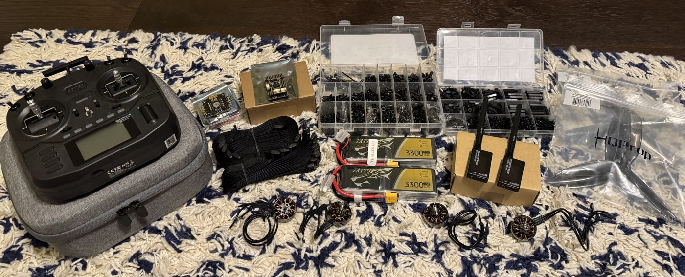

Learning Autonomy From Scratch
I've spent a lot of time around everything that flies, and I've always thought autonomy was super interesting. Then I came across a couple of Harvard engineering students who built a tilt-rotor VTOL UAV for their capstone project. I thought that was the perfect intersection of everything I was interested in, so I thought, “Why don't I just copy them, but do it by myself?”
I had never built or flown a drone before, but I do have a bunch of experience with airplanes (a tilt-rotor VTOL is a drone/plane hybrid). So I started this Autonomous Quadcopter project. I already knew how to design and build planes, so I'll do the same with a drone first and learn autopiloting at the same time. Once I've learned that, I'll put my knowledge together and build the tilt-rotor. So far, this project has been a crash course in multirotors, electronics, and flight software.

First came electronics research. It took me around two weeks, but here's everything I ended up purchasing:
| Subsystem | Hardware | Job |
|---|---|---|
| Flight control | H7-based flight controller running ArduCopter | Stabilization, navigation, and mission execution |
| Navigation | M10 GPS module | Position fix for GPS hold, waypoints, and return-to-launch |
| Propulsion | Four 2807-size brushless motors, 7-inch three-blade props | Thrust |
| Motor control | 60 A 4-in-1 ESC on AM32 firmware | Drives all four motors from one board |
| Power | 4S LiPo packs | Main flight battery |
| Control link | 2.4 GHz ExpressLRS receiver and handheld radio | Manual control and flight-mode switching |
| Telemetry | 915 MHz telemetry radio | Live data and mission uploads to Mission Planner on a laptop |
| Recovery | DShot beacon (motors beep) instead of a separate buzzer | Helps locate the drone if it goes down, with one less part to carry |
I had to solder the receiver to the flight controller, which went great! Everything is working the way it's supposed to, and power is flowing to every part of the system.
Right now, I'm calibrating all the sensors and tuning everything in Mission Planner to get it ready for its first flight. Once it's flying, the goal is for it to fly waypoint missions planned on a map, hold its position with GPS, and fly itself home and land if something goes wrong.
I'm also designing the frame at the same time. I'm building it in SolidWorks around 7-inch propellers, with room for the flight controller, GPS, receiver, and telemetry radio on one stack. I'll be 3D printing it in ASA, which handles heat and sunlight much better than PLA.
This page will grow as the build does.